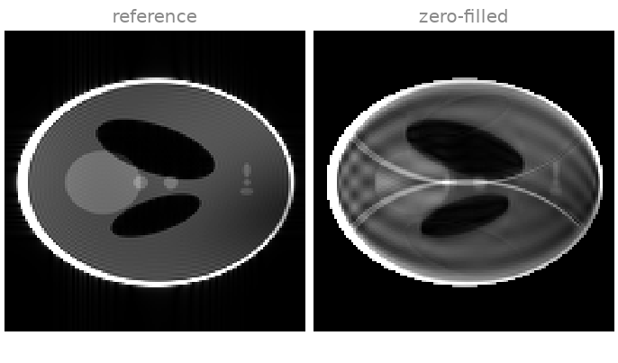
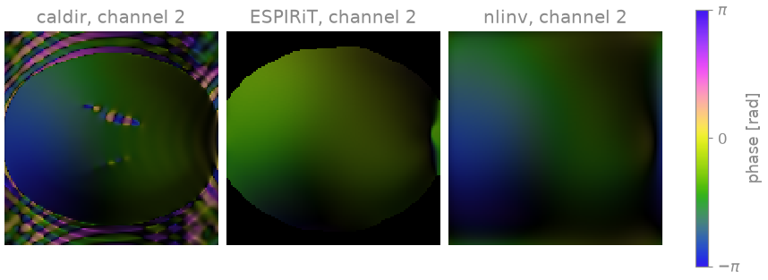
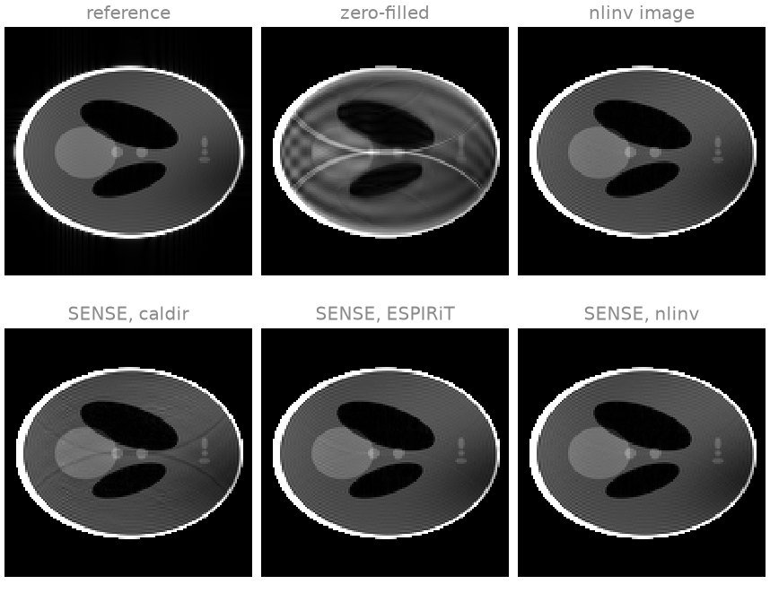
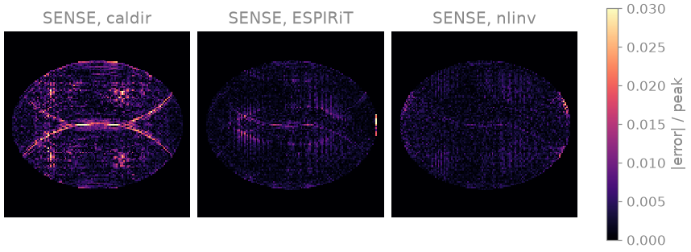
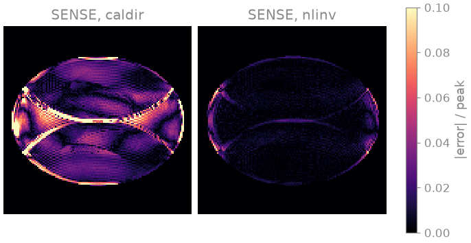
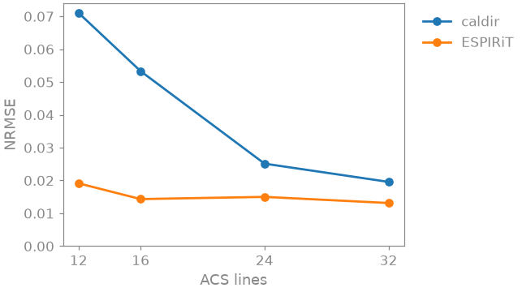

Note
Go to the end to download the full example code.
3. Coil sensitivities#
In lesson 2 you estimated the coil sensitivities with ESPIRiT from a block of
24 central lines and passed them to pics without examining them. SENSE
[1] solves
for the image \(x\) with the sensitivities \(S_c\) taken as known. Whatever is wrong in \(S_c\) ends up in the image, as residual aliasing or as shading, however good the solver.
On a scanner the sensitivities come either from a separate low-resolution prescan or, as here, from the scan itself: a fully sampled block of lines at the centre of k-space, the autocalibration (ACS) region. In this lesson you estimate them in three ways, reconstruct with each, and then shrink the ACS region to see which of the three still works.
Learning objectives
Estimate coil sensitivities with
bartorch.tools.caldir(),bartorch.tools.ecalib()(ESPIRiT) andbartorch.tools.nlinv(), and use each inbartorch.apps.pics().Recognise what a poor set of maps does to a SENSE reconstruction.
Explain why ESPIRiT needs an ACS region larger than its kernel, and why nonlinear inversion does not.
Previous: 2. From k-space to an image. Next: 4. Joint reconstruction of image and sensitivity maps, where you reconstruct the image and the sensitivities together and write that reconstruction out as an operator and a solver.
Simulated acquisition#
The object is BART’s Shepp-Logan phantom, seen through BART’s analytical
eight-channel head coil. As in lesson 1, you ask for its k-space directly
(kspace=True) rather than transforming a sampled image, so the data do
not share the discretization of the reconstructions below. Then you add
complex Gaussian noise of variance 2 to every sample.
import torch
import bartorch
import bartorch.tools as bt
from bartorch import apps
SIZE = 128
COILS = 8
ACCELERATION = 3
clean = bt.phantom(SIZE, coils=COILS, kspace=True)
kspace = bt.noise(clean, n=2.0, s=3)
You acquire every third phase encode, plus a central block of
calibration lines in full. Regular undersampling by \(R\) replicates
the point spread function \(R\) times across the field of view, so each
voxel of the zero-filled image is the sum of three voxels a third of the
field of view apart. Only the sensitivities, which differ between those
three voxels, can separate them.
encodes = torch.arange(SIZE) - SIZE // 2
def acquire(calibration):
"""Every third line, and a fully sampled block at the centre."""
acs = encodes.abs() < calibration // 2
lines = (encodes % ACCELERATION == 0) | acs
return kspace * lines.to(torch.complex64).reshape(SIZE, 1)
measured = acquire(24)
print(f"{float(bt.pattern(measured).real.mean()):.0%} of k-space acquired")
channel_images = bartorch.ifft(measured, axes=(-2, -1))
zero_filled = bartorch.rss(channel_images, axes=(0,))[0]

46% of k-space acquired
The images are windowed at half the intensity of the skull, which saturates. In the zero-filled image you see the three overlapping copies of the phantom that regular undersampling makes. The reference on the left is the root sum of squares of the fully sampled, noise-free data; every error below is the NRMSE of a magnitude image against it, inside the phantom, after fitting one global scale, because the three estimators normalize the maps, and so the image, differently.
Sensitivity estimation#
Directly from the ACS lines. bartorch.tools.caldir() reconstructs
a low-resolution image per channel from the ACS region alone and divides
each by their root sum of squares. It is the simplest estimate, and its
resolution is the resolution of the ACS block:
direct = bt.caldir(measured, 24)
ESPIRiT [2] slides a small kernel over the ACS region, builds a
calibration matrix from every position of it, and takes the sensitivities as
the eigenvectors of an operator derived from that matrix. crop sets the
maps to zero where the eigenvalue falls below it, which keeps the background
out of the reconstruction:
espirit = bt.ecalib(measured, maps=1, calib_size=24, crop=0.8)
Nonlinear inversion [3] estimates the sensitivities and the image
together, from every acquired sample; the ACS region is just part of the
data. maxiter counts Gauss-Newton steps, and because the regularization
shrinks with every step, the count acts as a regularization parameter;
twelve suit this noise level. You divide its maps by their root sum of
squares, which is the normalization the other two use. Lesson 4 is about
this method.
joint, estimated = bt.nlinv(measured, maxiter=12, return_sensitivities=True)
rss_maps = bartorch.rss(estimated, axes=(0,), keepdim=True)
nonlinear = estimated / rss_maps.abs().clamp(min=1e-6)
print(f"caldir {tuple(direct.shape)}")
print(f"ecalib {tuple(espirit.shape)}")
print(f"nlinv {tuple(nonlinear.shape)}")

caldir (8, 1, 128, 128)
ecalib (8, 1, 128, 128)
nlinv (8, 1, 128, 128)
Here is channel 2 from each: brightness is the magnitude and colour the
phase. The phase of a set of maps is only defined up to a phase common to
all channels, which each estimator fixes its own way; that common phase
passes into the phase of the image and leaves its magnitude alone. Up to
it, the three agree inside the object. Outside it the data say nothing
about a sensitivity, and the estimators return different values there:
caldir divides noise by noise and returns an arbitrary value of unit
magnitude, ESPIRiT sets the maps to zero, and nlinv continues the
smooth function its regularization favours.
SENSE and map quality#
Now you give each set to bartorch.apps.pics() with the same Tikhonov
weight and the same number of conjugate-gradient iterations, so the only
thing that differs is the maps. The image nlinv returned with its maps
is a fourth estimate.
reconstructions = {
name: apps.pics(measured, maps, l2=0.001, maxiter=40)
for name, maps in (
("caldir", direct),
("ESPIRiT", espirit),
("nlinv", nonlinear),
)
}
for name, estimate in reconstructions.items():
print(f"{name:>12} NRMSE {error(estimate):.3f}")
print(f"{'nlinv image':>12} NRMSE {error(joint):.3f}")


caldir NRMSE 0.025
ESPIRiT NRMSE 0.015
nlinv NRMSE 0.012
nlinv image NRMSE 0.011
All three sets of maps unfold the three copies, and so does nlinv on its
own. The error maps, at 3 % of the image peak, show what is left. The
direct estimate leaves a faint residual fold at the edges of the phantom,
where its low-resolution maps are least accurate; ESPIRiT and nonlinear
inversion leave mostly noise.
ACS size#
Now you keep only eight central lines. ESPIRiT’s kernel is six samples wide
by default, so eight lines leave it three positions along the
phase-encoding axis, and its calibration matrix has too few rows. caldir
still runs, on an image of eight lines’ resolution. nlinv uses every
acquired sample, so the ACS region affects it only through its first
Gauss-Newton steps.
scarce = acquire(8)
espirit = bt.ecalib(scarce, maps=1, calib_size=8, crop=0.8)
covered = float((espirit.abs() > 0).float().mean())
print(f"ESPIRiT: {covered:.0%} of voxels with a sensitivity")
direct = bt.caldir(scarce, 8)
joint, estimated = bt.nlinv(scarce, maxiter=12, return_sensitivities=True)
rss_maps = bartorch.rss(estimated, axes=(0,), keepdim=True)
nonlinear = estimated / rss_maps.abs().clamp(min=1e-6)
scarce_reconstructions = {
"caldir": apps.pics(scarce, direct, l2=0.001, maxiter=40),
"nlinv": apps.pics(scarce, nonlinear, l2=0.001, maxiter=40),
"nlinv image": joint,
}
for name, estimate in scarce_reconstructions.items():
print(f"{name:>12} NRMSE {error(estimate):.3f}")


ESPIRiT: 0% of voxels with a sensitivity
caldir NRMSE 0.173
nlinv NRMSE 0.040
nlinv image NRMSE 0.033
ESPIRiT returns maps that are zero in every voxel, which no reconstruction
can use. With the direct estimate you see residual aliasing: maps at the
resolution of eight lines do not follow the coil profiles closely enough to
unfold three copies, and the folded edges of the skull reappear inside the
phantom (the error maps are now at 10 % of the peak). The maps from
nonlinear inversion still unfold the image, because they are fitted to all
the acquired samples. The same estimator works on non-Cartesian data, where
there is no Cartesian ACS region at all, as bartorch.tools.ncalib(),
which you use in lesson 8 (8. Radial SENSE).
These errors are for one phantom, one noise level and one sampling pattern, and they depend on how each reconstruction is regularized; they do not rank the estimators in general.
Exercise: ACS size#
Between eight and 24 lines the outcome changes. Sweep the size of the ACS region for the two estimators that use only the ACS block, and compare how their errors depend on it:
sizes = (12, 16, 24, 32)
scores = {"caldir": [], "ESPIRiT": []}
for lines in sizes:
data = acquire(lines)
maps = {
"caldir": bt.caldir(data, lines),
"ESPIRiT": bt.ecalib(data, maps=1, calib_size=lines, crop=0.8),
}
for name, estimate in maps.items():
image = apps.pics(data, estimate, l2=0.001, maxiter=40)
scores[name].append(error(image))

12 lines: caldir 0.071, ESPIRiT 0.019
16 lines: caldir 0.053, ESPIRiT 0.014
24 lines: caldir 0.025, ESPIRiT 0.015
32 lines: caldir 0.020, ESPIRiT 0.013
The ESPIRiT error is close to its 24-line value from twelve lines on: once
the kernel has enough positions in the ACS region, more lines add little.
The caldir error keeps falling as the region grows, because its maps
are only as sharp as the ACS image they are computed from, and it stays
above ESPIRiT’s at every size here. Try crop values between 0.5 and 0.95
for ESPIRiT, or another maxiter for nlinv at eight lines, and see
how the errors move.
As a spec#
What this lesson built, stated the way you would ask an agent for it:
With bartorch, simulate 8-channel analytical k-space of a 128x128
Shepp-Logan phantom (bt.phantom(coils=8, kspace=True)) with noise of
variance 2. Keep every third phase encode plus a fully sampled central
ACS block. Estimate sensitivities three ways: bt.caldir, bt.ecalib
(one map, crop 0.8) and bt.nlinv (12 Gauss-Newton steps, maps divided
by their root sum of squares). Reconstruct with apps.pics (l2=0.001,
40 CG iterations) using each set, and report the NRMSE of the magnitude
inside the phantom against the noise-free RSS image, after a global
scale. Repeat with 24 and with 8 ACS lines.
References#
Total running time of the script: (0 minutes 7.319 seconds)